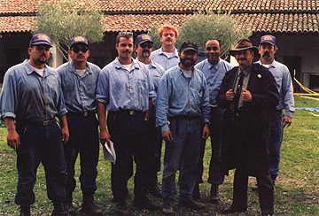

In addition, the Institute and a number of community volunteers, under the joint direction of Professor Ruben Mendoza (Director, CSUMB Institute of Archaeology) and Lt. Flavio Silva (Camp Commander, GCC#38) have partnered to provide the men of the camp with diverse opportunities to engage in a program of hands-on historic preservation and archaeological explorations. Ms. Brenda Pobre, CSUMB graduate student assistant, longterm volunteer, and program coordinator of the Gabilan Conservation Camp Education Program has been instrumental in obtaining support for this collaborative venture. In addition to coordinating the collection of contributions for the week to week needs of the restoration project, Ms. Pobre has taught classes at the camp and mentored Gabilan Camp "Straight Forward" program members.
The "Straight Forward" program provides community outreach, service,
and gang intervention services for the communities of the Central Coast.
The Gabilan Camp is located on Highway 101 North, 28 miles South of Salinas and approximately 110 miles North of San Luis Obispo. The Gabilan Conservation Camp is affiliated with both the California Department of Corrections and the California Department of Forestry.